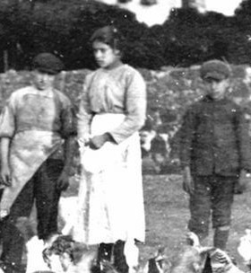
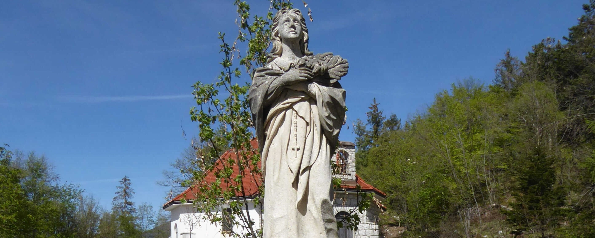
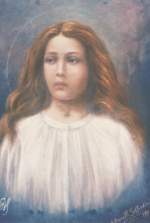
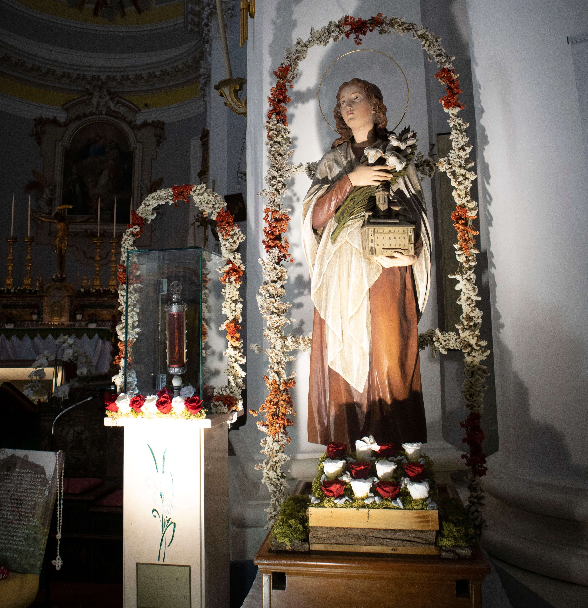
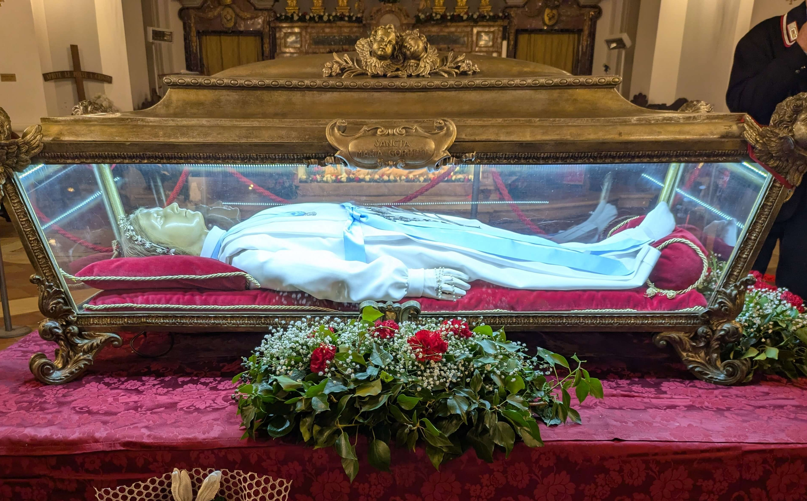

"A Pequena Mártir da Pureza"
"Sim, por amor a Jesus, eu o perdoo, e desejo que ele esteja um dia comigo no Paraíso."

Maria Teresa Goretti nasceu em 16 de outubro de 1890, em Corinaldo, na província de Ancona, Itália, e foi batizada no dia seguinte, na Igreja de São Francisco da mesma cidade. Era a terceira de seis filhos sobreviventes de Luigi Goretti e Assunta Carlini — uma família camponesa pobre, mas profundamente religiosa, que rezava o terço em conjunto todas as noites e participava da Missa todos os domingos sem falta. Desde pequena, era chamada com carinho de "Marietta" pelos familiares.
A pobreza obrigou a família a se mudar diversas vezes em busca de trabalho na lavoura. Em 1899, fixaram-se em Le Ferriere, uma localidade insalubre próxima a Nettuno, na região do Lácio — terras pantanosas, infestadas de mosquitos, que agricultores mais abastados evitavam. Ali passaram a dividir a moradia com outra família, a dos Serenelli: o viúvo Giovanni e seu filho Alessandro, então com cerca de dezoito anos. Os Goretti ocupavam o andar inferior da antiga construção; os Serenelli, o superior. A cozinha era comum. Luigi arrependeu-se cedo da associação: Giovanni era dado à bebida, e o filho Alessandro revelava um temperamento perturbado, alimentado por leituras obscenas que guardava no quarto. Mas a situação financeira não deixava alternativa.
Quando Maria tinha apenas nove anos, Luigi Goretti contraiu malária nas terras alagadas de Le Ferriere e morreu. A perda foi devastadora — financeira e emocionalmente. Assunta passou a trabalhar nos campos para honrar os compromissos do marido, junto com os filhos mais velhos. Cabia a Maria, como filha mais velha em casa, assumir inteiramente os cuidados domésticos: cozinhava para ambas as famílias, lavava, costurava, cuidava dos irmãos pequenos e zelava pela casa — uma carga desproporcional para uma menina de nove anos.
Nunca pôde frequentar a escola regularmente por causa dessas obrigações. Não sabia ler nem escrever. Ainda assim, determinada a receber a Eucaristia, aprendeu o catecismo oralmente, com a ajuda de uma senhora da vizinhança que lhe ensinava as doutrinas de memória. Em 16 de junho de 1901, fez sua Primeira Comunhão na Igreja de Conca — um dos dias mais felizes de sua curta vida. Aquela manhã, segundo relatos de quem estava presente, Maria irradiava uma alegria que impressionava quem a via. Prometeu a Jesus, naquele dia, três coisas: que manteria seu corpo e alma puros para Ele; que rezaria pelas almas dos pecadores; e que diaria três Ave-Marias toda manhã e noite pedindo à Nossa Senhora que a mantivesse pura e forte.
Testemunhos de vizinhos e familiares a descrevem de forma consistente: uma menina serena, alegre no trabalho, incapaz de mentir ou de guardar rancor. Nunca se sentava à mesa até que todos estivessem servidos. Quando a mãe insistia para que comesse mais, respondia: "Come a senhora, que precisa de forças para trabalhar."
Com a morte de Luigi, a situação da família piorou. Assunta e os filhos mais velhos passaram a depender ainda mais dos Serenelli para garantir a moradia, o que tornava qualquer conflito aberto praticamente impossível. Alessandro, que crescera numa família desestruturada — com a mãe internada num hospício desde a infância e o pai alcoolista —, passou a assediar Maria com frequência crescente. Fazia-lhe propostas indecorosas, ameaças veladas, olhares intimidadores.
Maria recusava sempre, afirmando com clareza que aquilo era pecado. Chorando, pedia à mãe que não a deixasse sozinha em casa — mas Alessandro a havia ameaçado de morte caso contasse o que se passava, e ela, com medo de criar conflito numa situação em que a família dependia dos Serenelli para sobreviver, nunca explicou claramente o motivo de seu temor. Suas súplicas foram tomadas como caprichos infantis. Ninguém ao redor pôde prever o que estava por vir.
Em 5 de julho de 1902, Maria estava sentada nos degraus externos da casa, remendando uma camisa de Alessandro, enquanto vigiava sua irmã caçula Teresa, que dormia perto. A mãe e os irmãos trabalhavam nos campos; a casa estava essencialmente deserta. Alessandro aproveitou a ausência dos outros e subiu as escadas até ela. Quando ela resistiu e recusou mais uma vez, ele a arrastou para dentro e, diante da recusa firme, a golpeou repetidamente com uma lâmina afiada — catorze perfurações, atingindo coração, pulmões e intestinos.
O choro da pequena Teresa alertou os adultos. Giovanni Serenelli e Assunta encontraram Maria caída em poça de sangue e a levaram ao hospital de Nettuno. Os médicos que a receberam ficaram espantados que ainda estivesse viva, tamanha a gravidade das lesões. Operaram-na sem anestesia — ela recobrou a consciência no meio do procedimento e suportou a dor sem perder a serenidade. Durante as cerca de vinte horas que sobreviveu, teve tempo de receber a Santa Comunhão e a Unção dos Enfermos.
Quando o sacerdote lhe perguntou se perdoava seu agressor, Maria respondeu sem hesitar: "Sim, por amor a Jesus, eu o perdoo, e desejo que ele esteja um dia comigo no Paraíso." Faleceu em 6 de julho de 1902, com apenas onze anos, noves meses e vinte e um dias de vida — de olhos fixos numa imagem da Virgem Maria e segurando um crucifixo contra o peito.
Maria Goretti morreu em 1902, mas os debates que sua vida provoca são inteiramente contemporâneos. Numa cultura que simultaneamente banaliza a sexualidade e luta para encontrar linguagem adequada sobre consentimento, violência e dignidade humana, a história de uma menina de onze anos que disse "não" com a própria vida — e perdoou quem a matou — continua a desconcertar, comover e interpelar.
O testemunho de Maria não é apenas sobre pureza no sentido estritamente sexual. É sobre a integridade da pessoa humana diante da coerção. Ela foi vítima de assédio prolongado, de ameaças, de silêncio forçado pelo medo — experiências que milhões de mulheres e crianças reconhecem hoje com nomes que o século XIX não tinha. O que ela viveu tem nome em 2025: abuso de poder, exploração de vulnerabilidade econômica, violência de gênero. A Igreja a canonizou como mártir da pureza; o mundo de hoje pode também lê-la como testemunha da dignidade inviolável de toda pessoa.
Há também a questão do perdão — talvez o aspecto mais desconcertante de sua história para a sensibilidade contemporânea. Numa época em que a cultura tende a equiparar justiça com punição e cura com ressentimento legítimo, Maria Goretti perdoou seu assassino antes de morrer e desejou encontrá-lo no Céu. Não por fraqueza, não por resignação, não por ignorância do que lhe havia sido feito — mas por uma liberdade interior que nenhuma violência conseguiu destruir. E o mais espantoso: o perdão funcionou. Alessandro Serenelli converteu-se, passou o restante da vida em penitência genuína, e estava entre os quinhentos mil presentes na Praça São Pedro quando ela foi canonizada — ajoelhado, chorando. Poucos episódios na história moderna ilustram com tanta concretude o que o perdão cristão pode produzir na realidade, não apenas na teoria.
Por isso Maria Goretti continua a ser uma das santas mais invocadas do mundo entre jovens — não apesar de sua história ser difícil, mas por causa disso. Ela não é uma figura de cartão-postal. É uma menina real, de família pobre, sem escola, sem proteção institucional, que enfrentou uma situação de violência concreta e a atravessou com uma dignidade que envergonha e inspira ao mesmo tempo. Numa geração que busca autenticidade e desconfia de santidade asséptica, Maria Goretti é exatamente o oposto: uma santa de carne e sangue, cujo testemunho custou tudo.
Os momentos centrais de uma vida de apenas onze anos
16 Out 1890
Nasce em Corinaldo, província de Ancona, Itália, terceira de sete filhos de Luigi Goretti e Assunta Carlini.
1899 · 9 anos
A família se instala em Le Ferriere, próximo a Nettuno, dividindo moradia com a família Serenelli.
1900 · 9 anos
Luigi Goretti morre de malária. Maria assume os cuidados da casa e dos irmãos mais novos.
1901 · 11 anos
Recebe a Eucaristia pela primeira vez, após estudar o catecismo com dedicação por conta própria.
5 Jul 1902
Alessandro Serenelli a agride com uma lâmina ao ser recusado. Maria resiste em defesa de sua pureza.
6 Jul 1902
Falece no hospital de Nettuno após perdoar explicitamente seu agressor, desejando reencontrá-lo no Céu.
27 Abr 1947
É beatificada pelo Papa Pio XII, no Vaticano, diante de grande multidão de jovens.
24 Jun 1950
É canonizada pelo Papa Pio XII na Praça São Pedro, com a presença de sua mãe e de Alessandro Serenelli, já convertido.
Os prodígios reconhecidos pela Igreja para sua beatificação e canonização
01
Itália
Uma religiosa em estado de saúde extremamente debilitado, sem perspectiva médica de recuperação, foi inteiramente curada após fervorosas orações pedindo a intercessão de Maria Goretti. O caso foi investigado e aprovado pela Congregação para as Causas dos Santos, abrindo caminho para a beatificação.
Aprovado em 1947 · para a Beatificação02
Itália
Um homem que sofria de surdez considerada irreversível pela medicina recuperou subitamente a audição após a intercessão de Maria Goretti ser invocada por sua família. O Papa Pio XII citou este e outros casos semelhantes — entre os mais de quarenta milagres já registrados à época — como evidência da intercessão extraordinária da jovem mártir.
Aprovado em 1950 · para a CanonizaçãoImagens da vida e memória de Maria Goretti




Imagens utilizadas sob licença de seus respectivos autores. Créditos completos disponíveis aqui.
Documentação utilizada para a elaboração deste perfil
Maria Goretti — Wikipédia
Verbete biográfico com referências históricas e processuais
Ó Deus, nosso Pai, que concedestes à jovem Maria Goretti a graça de preferir a morte à mancha do pecado, e de perdoar, com amor sobrenatural, aquele que tirou sua vida.
Ela, ainda criança, soube enfrentar a violência com fortaleza e responder ao mal com perdão, revelando ao mundo que a pureza e a misericórdia não são fraquezas, mas a mais alta forma de amor a Ti.
Concede-me, por sua intercessão, a graça que humildemente Te peço, e dá-me a coragem de viver com a mesma fidelidade e o mesmo coração perdoador que ela viveu até o último instante.
Que ela interceda por mim, e por todas as vítimas de violência, junto a Ti. Amém.
· Para uso privado · Santa de devoção popular e litúrgica ·